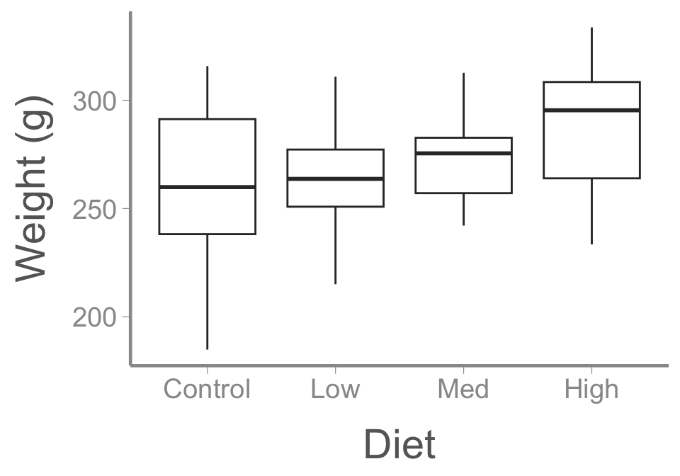
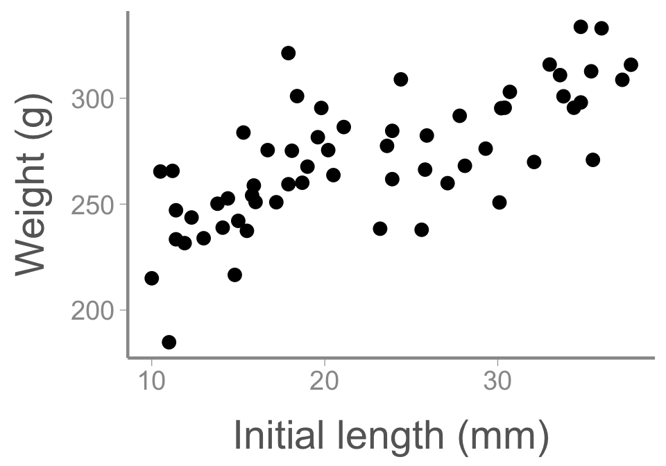
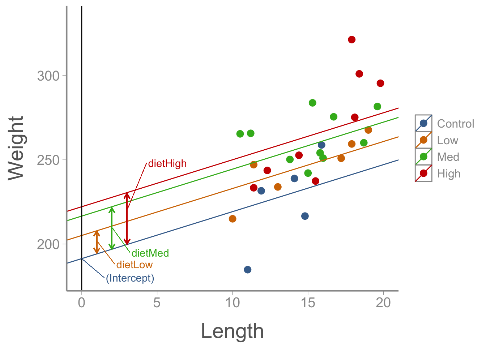
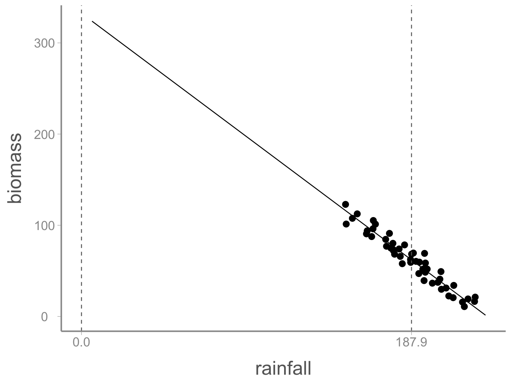

LECTURE 12: mutiple regression, part 1
FANR 6750
Fall 2026
Outline
1) Motivation
2) Model structure
3) Factor + continuous predictor (ANCOVA)
4) Two factors (blocking design)
5) Two continuous predictors
Motivation
So far, we have learned about variations on linear models with a single predictor variable
One continuous predictor (aka regression)
One binary predictor (aka t-test)
One categorical predictor (aka ANOVA)
More often than not, you are likely to use models with more than one predictor
Fortunately, the linear model structure we have used so far can easily be expanded to include many predictors1
What are some reasons you would use a multiple regression model?
Multiple regression
Models with more than one predictor go by many names (blocking, ANCOVA, factorial, etc) but are all types of multiple regression of the form2:
\[\large y_i = \beta_0 + \beta_1 \times X1_i + \beta_2 \times X2_i + \epsilon_i\] \[\large \epsilon_i \sim normal(0, \sigma)\]
Interpretation of the intercept \(\beta_0\), residual error \(\epsilon_i\), and residual variance \(\sigma\) remains the same as before
Interpretation of the slope coefficients \(\beta_1\), \(\beta_2\), etc. changes slightly
Slopes are the expected change in the response variable \(y_i\) for a unit change in the corresponding predictor variable while holding all other predictors constant
Because slope coefficients change meaning depending on what covariates are in the model, the parameter estimates themselves also change
Understanding why parameter estimates change as covariates are added or dropped from a model is critical to using these models
Example
One of the most common reasons for using multiple regression models is to control for extraneous sources of variation (i.e., sources of variation that influence the response variable but are not of interest in and of themselves)
Why would we want to control for extraneous variation?
Perhaps we are raising desert tortoises (Gopherus agassizii) for release into the wild and are interested in whether different diets influence their weight gain

Example
A tortoises final weight, however, is not influenced only by diet. For example, it may also be influenced by it’s starting body size

As we will see, accurately measuring the effect of diet requires taking into account each individual’s initial body size. Multiple regression allows us to do this
Anova
Let’s start by fitting a model we’ve already learned about3:
Call:
lm(formula = weight ~ diet, data = dietdata)
Residuals:
Min 1Q Median 3Q Max
-76.39 -19.29 -0.37 19.78 54.61
Coefficients:
Estimate Std. Error t value Pr(>|t|)
(Intercept) 261.19 7.69 33.94 <2e-16 ***
dietLow 4.56 10.88 0.42 0.677
dietMed 11.02 10.88 1.01 0.316
dietHigh 25.28 10.88 2.32 0.024 *
---
Signif. codes: 0 '***' 0.001 '**' 0.01 '*' 0.05 '.' 0.1 ' ' 1
Residual standard error: 29.8 on 56 degrees of freedom
Multiple R-squared: 0.0989, Adjusted R-squared: 0.0506
F-statistic: 2.05 on 3 and 56 DF, p-value: 0.117Conclusions?
“Ancova”
Now let’s fit a slightly different model4:
Call:
lm(formula = weight ~ diet + length, data = dietdata)
Residuals:
Min 1Q Median 3Q Max
-38.25 -12.18 -2.53 12.15 49.23
Coefficients:
Estimate Std. Error t value Pr(>|t|)
(Intercept) 191.364 8.862 21.59 < 2e-16 ***
dietLow 13.727 6.878 2.00 0.05091 .
dietMed 25.226 6.974 3.62 0.00065 ***
dietHigh 30.784 6.833 4.51 3.5e-05 ***
length 2.789 0.297 9.38 5.2e-13 ***
---
Signif. codes: 0 '***' 0.001 '**' 0.01 '*' 0.05 '.' 0.1 ' ' 1
Residual standard error: 18.6 on 55 degrees of freedom
Multiple R-squared: 0.654, Adjusted R-squared: 0.628
F-statistic: 25.9 on 4 and 55 DF, p-value: 4.14e-12What changed?
Signal vs. noise
\[y_i = \beta_0 + \beta_1 X1_i + \beta_2 X2_i + \epsilon_i\]
In any statistical test, our goal is to detect a signal (\(\beta\)) in the presence of noise (residual variation \(\epsilon\))
Our ability to do that depends on the strength of the signal (usually beyond our control) and the amount of noise (partially within our control)
In the first model, where was all the variation in weight caused by variation in length?
We can see this clearly by looking at the ANOVA tables for the two models
Anova tables
Analysis of Variance Table
Response: weight
Df Sum Sq Mean Sq F value Pr(>F)
diet 3 5459 1820 2.05 0.12
Residuals 56 49734 888 Analysis of Variance Table
Response: weight
Df Sum Sq Mean Sq F value Pr(>F)
diet 3 5459 1820 5.23 0.003 **
length 1 30615 30615 88.07 5.2e-13 ***
Residuals 55 19119 348
---
Signif. codes: 0 '***' 0.001 '**' 0.01 '*' 0.05 '.' 0.1 ' ' 1Note the residual sum of squares and mean square error of the two models
Sums of squares
When calculating the sums of squares for multiple regression models, the order that we write the model matters
We wrote the model formula with diet first and length second (weight ~ diet + length). R calculates the sums of squares for diet first, then length
- Notice that the diet SS in the two previous tables are the same
If we wrote weight ~ length + diet, R calculates the length SS first, then the diet SS
- The diet SS tells us how much variation is explained by the treatment variable after accounting for the covariate
This sequential method of calculating is called the Type I sums of squares
- Type I SS is the default used by
R
Sums of squares
Analysis of Variance Table
Response: weight
Df Sum Sq Mean Sq F value Pr(>F)
diet 3 5459 1820 5.23 0.003 **
length 1 30615 30615 88.07 5.2e-13 ***
Residuals 55 19119 348
---
Signif. codes: 0 '***' 0.001 '**' 0.01 '*' 0.05 '.' 0.1 ' ' 1Analysis of Variance Table
Response: weight
Df Sum Sq Mean Sq F value Pr(>F)
length 1 27882 27882 80.21 2.5e-12 ***
diet 3 8192 2731 7.86 0.00019 ***
Residuals 55 19119 348
---
Signif. codes: 0 '***' 0.001 '**' 0.01 '*' 0.05 '.' 0.1 ' ' 1Sums of squares
Type I SS is only one of several ways of calculating sums of squares
Type II and Type III SS use slightly different methods that do not depend on order
For balanced designs, all three approaches will give the same answers
For unbalanced designs, the correct approach depends on the hypotheses being tested
Other software programs (SAS, SPSS) default to Type III so may give different results than
R(but all programs have methods to calculate SS using each method)
Another example
In 1960, Herbert Stoddard established an experiment at Tall Timbers Research Station to study the effects of fire frequency on long-leaf pine forests in the Red Hills region of north Florida and southwest Georgia. The experiment originally consisted of eighty four, 0.5ha plots, each of which was assigned one of four treatments: 1-year, 2-year, or 3-year fire intervals or unburned. Stoddard recognized the soil type likely influenced response to fire, so treatment plots were allocated across the 3 primary soil types found on Tall Timbers
Another example
We will use a made-up data set from this real experiment, with the goal of understanding whether understory plant richness (measured as the number of understory vascular plant species recorded on each plot) differs among burn treatments.
Fire frequency
|
|||||
|---|---|---|---|---|---|
| Replicate | Unburned | 1-year | 2-year | 3-year | Soil |
| 1 | 30 | 43 | 36 | 37 | Loamy sand |
| 2 | 28 | 37 | 30 | 27 | Sandy loam |
| 3 | 18 | 27 | 24 | 21 | Upland |
Question: What are the experimental units? What are the observational units?
Another example
Fit the model with treatment only:
Analysis of Variance Table
Response: species
Df Sum Sq Mean Sq F value Pr(>F)
interval 3 173 57.6 1.1 0.4
Residuals 8 419 52.4 Conclusions?
Another example
Because the soil types differ in a variety of ways that may influence plant communities, we probably want to control for this variability in our analysis
We do that by adding it to the model:
Analysis of Variance Table
Response: species
Df Sum Sq Mean Sq F value Pr(>F)
interval 3 173 57.6 13.4 0.00456 **
soil 2 393 196.7 45.7 0.00023 ***
Residuals 6 26 4.3
---
Signif. codes: 0 '***' 0.001 '**' 0.01 '*' 0.05 '.' 0.1 ' ' 1Conclusions?
Another example
Note that in this case, each treatment is applied exactly once within each soil type
Soil type itself is not a experimental treatment and is not replicated
This design is often referred to as a “randomized complete blocking” design (RCBD)
The soil types are called “blocks” and should be identified as a source of variability before the experiment is conducted
“Complete” refers to each treatment being represented in each block
“Randomized” means that treatments are assigned randomly to each experimental unit
Again, blocks must be identified during the design phase. You should not “search” for blocks after the fact (why?)
Multiple regression
As these examples show, one reason to use a multiple regression model is to increase power to detect treatment effects
Remember that \(F = MS_{treatment}/MS_{error}\)
By explaining some of the residual variation, including predictors in the model reduces \(MS_{errer}\) and thereby increases \(F\)
When one predictor is a factor and the other(s) is continuous, this model is often referred to as an ANCOVA (Analysis of Covariance)
When both predictors are factors and each treatment is included within each block, this model is often referred to a randomized complete block design
In experimental settings, ANCOVA and blocking are used when there is extraneous variation that we cannot control during the design phase
Predictor/blocks are not of interest; only included to increase power
Are the predictors/blocks confounded with the treatment in these cases?
Interpreting model output
If we are only interested in the treatment effect and not the blocks/continuous predictor, the ANOVA table (possibly in combination with multiple comparisons) is often sufficient for interpreting the model
- This is often the case in experimental settings
However, we are often interested in the effects of multiple predictors
In this case, it helps to understand the model structure and parameter interpretation in more detail
Understanding how multiple regression models are structured will also help when you need to include different combinations of factors and continuous predictors
Luckily, you already have the tools exploring these models in detail…
Interpreting the ancova model
# A tibble: 5 × 5
term estimate std.error statistic p.value
<chr> <dbl> <dbl> <dbl> <dbl>
1 (Intercept) 191. 8.86 21.6 1.56e-28
2 dietLow 13.7 6.88 2.00 5.09e- 2
3 dietMed 25.2 6.97 3.62 6.48e- 4
4 dietHigh 30.8 6.83 4.51 3.50e- 5
5 length 2.79 0.297 9.38 5.16e-13Intercept= predicted weight of control group when length = 0dietLow= difference between control and low dietdietMed= difference between control and medium dietdietHigh= difference between control and high dietlength= predicted increase in weight for one unit increase in length
Interpreting the ancova model

Question: does the effect of length depend on diet treatment?
Answer: No. The model assumes the effect of length is the same for every treatment
Interpreting the rcbd model
Call:
lm(formula = species ~ interval + soil, data = firedata)
Residuals:
Min 1Q Median 3Q Max
-2.5000 -0.9167 0.0833 0.9375 2.2500
Coefficients:
Estimate Std. Error t value Pr(>|t|)
(Intercept) 32.08 1.47 21.87 6.0e-07 ***
interval1 10.33 1.69 6.10 0.00088 ***
interval2 4.67 1.69 2.75 0.03310 *
interval3 2.67 1.69 1.57 0.16656
soilsandy loam -6.25 1.47 -4.26 0.00532 **
soilupland -14.00 1.47 -9.54 7.6e-05 ***
---
Signif. codes: 0 '***' 0.001 '**' 0.01 '*' 0.05 '.' 0.1 ' ' 1
Residual standard error: 2.07 on 6 degrees of freedom
Multiple R-squared: 0.956, Adjusted R-squared: 0.92
F-statistic: 26.3 on 5 and 6 DF, p-value: 0.000518This scenario (two factors) is a little more tricky. But, as before, we’ll use the design matrix to help understand what each parameter means
Interpreting the rcbd model
(Intercept) interval1 interval2 interval3 soilsandy loam soilupland
1 1 0 0 0 1 0
2 1 0 0 0 0 0
3 1 0 0 0 0 1
4 1 1 0 0 1 0
5 1 1 0 0 0 0
6 1 1 0 0 0 1
7 1 0 1 0 1 0
8 1 0 1 0 0 0
9 1 0 1 0 0 1
10 1 0 0 1 1 0
11 1 0 0 1 0 0
12 1 0 0 1 0 1
attr(,"assign")
[1] 0 1 1 1 2 2
attr(,"contrasts")
attr(,"contrasts")$interval
[1] "contr.treatment"
attr(,"contrasts")$soil
[1] "contr.treatment"Interpreting the rcbd model
Intercept= predicted number of species in the unburned treatment in loamy sandinterval1= difference between unburned and 1-year fire intervalinterval2= difference between unburned and 2-year fire intervalinterval3= difference between unburned and 3-year fire intervalsoilsandy loam= difference between loamy sand and sandy loam soilssoilupland= difference between loamy sand and upland soils
Again, because there is no interaction between interval and soil, the model assumes that the effects of fire frequency are the same in every soil type (and that the soil differences are the same for every fire frequency)
One more example
We have looked at multiple regression examples with two factors and with one factor and one continuous covariate, but what about multiple continuous covariates?
The biomassdata object contains (made up) biomass measurements (kg) as a function of rainfall (mm) and elevation (km)
Multiple regression model
# A tibble: 3 × 5
term estimate std.error statistic p.value
<chr> <dbl> <dbl> <dbl> <dbl>
1 (Intercept) 320. 4.11 78.0 2.31e-51
2 rainfall -1.44 0.0217 -66.4 3.97e-48
3 elevation 3.97 0.241 16.5 3.77e-21Intercept= predicted biomass when rainfall = 0 and elevation = 0rainfall= predicted change in biomass for 1mm increase in rainfall while holding elevation constantelevation= predicted change in biomass for 1km increase in elevation while holding rainfall constant
Centering and standardizing data
When fitting models to continuous covariates, it is common to center or standardize covariates.
Centering is done by subtracting the mean
When interpreting centered data:
positive values indicate observations larger than the mean
negative values indicate observation smaller than the mean
units don’t change
Multiple regression model
# A tibble: 3 × 5
term estimate std.error statistic p.value
<chr> <dbl> <dbl> <dbl> <dbl>
1 (Intercept) 62.0 0.414 150. 1.24e-64
2 rainfall.c -1.44 0.0217 -66.4 3.97e-48
3 elevation.c 3.97 0.241 16.5 3.77e-21Intercept= predicted biomass when rainfall and elevation are at their meanrainfall= predicted change in biomass for 1mm increase in rainfall while holding elevation constantelevation= predicted change in biomass for 1km increase in elevation while holding rainfall constant
Multiple regression model

Looking ahead
Next time: Interactions
Reading: Fieberg chp. 3.8
Footnotes
Fitting more complicated models is easy. Interpretation of the parameters is not always as easy, as we will see
Note that this model only contains two predictors but multiple regression models often contain many predictors
Note that we can call this an “ANOVA” model since there is a single, categorical predictor but we can fit it using
lm()since it’s the same model, as we have learnedThis model has a single categorical variable and a single continuous covariate, which is traditionally refered to as “ANCOVA”